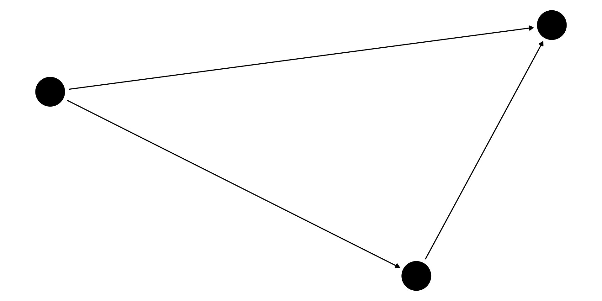

Correlation is not causation.
We ask: Does X cause Y?
Examples:
Claim:
> “Coffee drinkers live longer.”
👉 Think–Pair–Share:
What other factors might explain this?
Ice cream sales ↑
Shark attacks ↑
🦈 Do ice creams cause shark attacks?
👉 Lurking variable? (Answer: temperature/season)
👉 What kind of study would convince you?
For each unit \(i\):
Individual causal effect:
\[\tau_i = Y_i^{(1)} - Y_i^{(0)}\]
Which statement is true?
A. We can always observe both \(Y^{(1)}\) and \(Y^{(0)}\).
B. The causal effect is \(Y^{(1)} + Y^{(0)}\).
C. The causal effect is the difference \(Y^{(1)} - Y^{(0)}\).
D. Potential outcomes are irrelevant.
👉 Discuss and vote.
⚠️ Only one potential outcome observed:
- If treated: observe \(Y^{(1)}\).
- If not treated: observe \(Y^{(0)}\).
This is the Fundamental Problem of Causal Inference.
| Student | \(Y^{(1)}\) With Tutoring | \(Y^{(0)}\) Without Tutoring | Effect |
|---|---|---|---|
| Sarah | 85 | 80 | +5 |
| Alex | 78 | ? | ??? |
| Jamie | ? | 82 | ??? |
👉 Which values are counterfactual?
Treatment: attending today’s lecture
Outcome: knowledge tomorrow
Write down for yourself:
- \(Y^{(1)}\) = outcome if you attended.
- \(Y^{(0)}\) = outcome if you skipped.
👉 Which do you observe?
We usually care about the population average:
\[ACE = \mathbb{E}[Y^{(1)} - Y^{(0)}]\]
But we cannot see both potential outcomes → need assumptions.
If we only observe one outcome per person, how can we estimate ACE?
A. We can’t — causal inference is impossible.
B. Use averages across groups, under assumptions.
C. Guess the missing outcomes.
D. Average observed outcomes with missing values.
👉 Small group discussion.
Example: My test score ≠ influenced by your tutoring.
Violation: Herd immunity in vaccines.
👉 Class prompt: What other fields violate SUTVA?
Treatment ⟂ Potential Outcomes given covariates.

Confounding path: Health → Treatment, Health → Outcome.
Which DAG adjustment recovers causality?
A. Adjust for Treatment only.
B. Adjust for Outcome only.
C. Adjust for Health (confounder).
D. No adjustment needed.
\[ ACE = \mathbb{E}[Y^{(1)}] - \mathbb{E}[Y^{(0)}] \]
✅ Ignorability holds by design.
Patients self-select treatment.
👉 Brainstorm: Which covariates to adjust for?
Treatment: vaccination.
Outcome: illness.
Counterfactual: what if unvaccinated?
⚠️ Violation: My outcome depends on whether others are vaccinated. (Herd immunity → SUTVA fails)
👉 Ask: In policy, which is most relevant?
❌ We can observe both potential outcomes.
✅ Only one observed per unit.
❌ Association = causation.
✅ Confounding & bias distort.
❌ RCTs are always possible.
✅ Often infeasible → rely on observational designs.
Design a causal study:
👉 Share with your group.